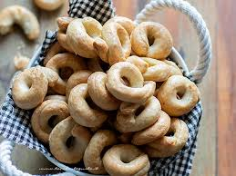

Stracciatella di bufala

La stracciatella è il ripieno gustoso e cremoso della burrata. Un mix di pasta filata “stracciata” e panna. Amata dai nostri consumatori, essa si presenta come un prodotto già pronto o, in alternativa, come un ingrediente versatile per arricchire altre preparazione, crude o cotte.
Mozzarella

La mozzarella è un formaggio fresco e versatile, molto utilizzato in cucina per la sua capacità di rendere speciale anche la ricetta più semplice.
Focaccia barese

La focaccia barese , conosciuta anche come focaccia pugliese o focaccia di bari o pizza barese, è una focaccia con pomodorini e olive, un lievitato squisito proprio come i MARITOZZI.La ricetta focaccia barese è davvero facile e con pochi passaggi riuscirete a preparare una focaccia fatta in casa irresistibile proprio come la ricetta focaccia barese originale.
Taralli
Probabilmente è il più grande classico, insieme ai grissini, che sulle tavole di un buffet non può davvero mancare. Sono i taralli: complici per spezzare l’appetito durante il giorno, perfetti compagni di calici di vino e drink durante l’aperitivo e, non per ultimo, sanno sostituire il pane in una fresca insalata e persino chiudere il pasto! I taralli sono davvero fantastici e piacciono a tutti perché possono essere preparati in tutti i modi: tondi o a goccia, piccoli o grandi, salati, speziati e persino dolci. Insomma ce n’è per tutti e di tutti i gusti.
Puccia pugliese

La puccia è un formato di pane, tipico della tradizione pugliese. Passeggiando per le strade del Salento e per i vicoli del tarantino è possibile imbattersi in una versione tutta genuina dei fast food: la pucceria. In questi piccoli locali riuscirete ad assaporare il gusto della puccia originale, cotta al forno a legna. Il nome di questo panino deriva dal termine con cui veniva chiamato il pane dei militari: “buccellatum”, ovvero boccone.